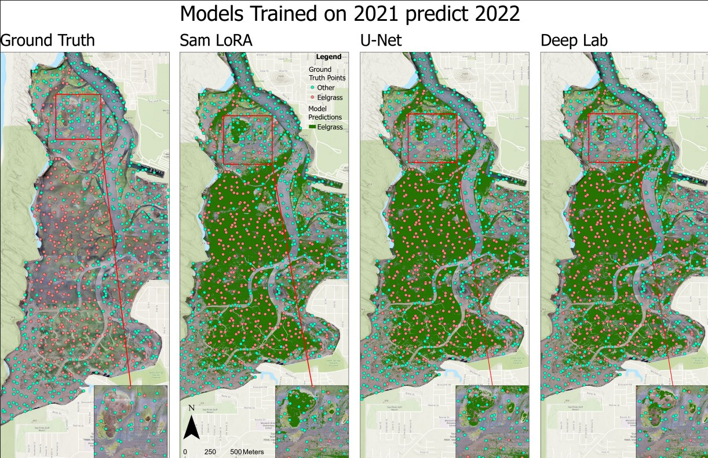
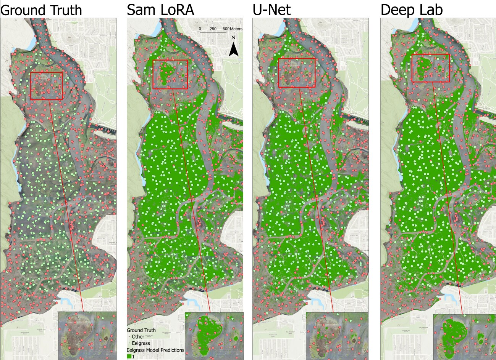

Research in progress
A living estuary, mapped over time.
Eelgrass (Zostera marina) is a foundational habitat in Morro Bay Estuary, where its distribution can change rapidly. This ongoing research evaluates whether machine-learning models can turn drone imagery into reliable, repeatable eelgrass maps.
Our team is comparing segmentation approaches across a multi-year imagery record and testing how well they generalize to new surveys. Results are preliminary as the research and manuscript are being completed.
Model evaluation
Testing models against new imagery.


Why it matters
Faster monitoring for a changing habitat.
Multi-year dataThe analysis draws on drone imagery and annotations collected across multiple years, then evaluates predictions on a held-out survey year.
Preliminary directionEarly tests show that deep-learning segmentation can support high-resolution eelgrass mapping while reducing the burden of manual annotation.
Next stepsThe team is continuing validation and preparing the research for presentation at the AGU conference in December 2026 and for publication.
Collaboration
This project is part of a collaborative research effort with G Andrew Fricker, Jonathan Ventura, Ryan K. Walter, the Morro Bay National Estuary Program, and others.